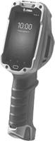
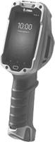

Ručni terminali - mobilni računari
Zebra TC 52 / 57
- Novi modeli kao naslednici ranije serije uređaja TC51/TC56 sa unapređenom platformom i performansama u odnosu na prethodnike.
- Maksimalizacija produktivnosti bazirana na adroid platformama – TC52 (Android 9 Pie) i TC57 (Android 8.1 Oreo).
- Veliki 5“ touchscreen displej koji možete jasno videti bez problema i na direktnoj sunčevoj svetlosti.
- Scan engine SE4710 za 1D i 2D barkodove.
- Zadnja kamera rezolucije 13MP za slike i video zapis, prednja od 5MP za video call.
- Worry free WiFi – obezbeđuje nezavisnu i pouzdanu wireless komunikaciju.
- PowerPrecision Console za praćenje stanja i brigu o dugotrajnosti baterija.
Zebra TC 8300
- Revolucionarni enterprise model ručnog računara koji maksimalizuje radne učinke.
- Specijalna ergonomija i dizaj doprinose rastu produktivnosti radnika do 14%.
- Skener na ovom računaru je pozicioniran tako da za kontrolu očitanog sadržaja nema potrebe da uređaj, kao kod klasičnih modela okrećete ka sebi – vidite ga odmah u istom položaju.
- Jednostavna migracija na android aplikacije – bez dodaznog kodiranja, backend modifikacija – uz Zebrinu All-touch terminal emulaciju.
- Android 8.1 Oreo, moćni 8-core procesor i 4GB Ram / 8 GB Flash-a.
- Scan engine u nekoliko opcija zavisno od namene i razdaljine čitanja, extended range sa izuzetnim performansama i čitanjem barkodova do 21m udaljenosti.
Zebra MC 3300
- Nova generacija industrijskih mobilnih računara koji dramatično podižu produktivnost i profitabilnost Vašeg biznisa.
- Android platforma, uz lako migraciju windows aplikacija na novo okruženje sa gotovim emulacijama.
- Četiri različite opcije kada je skeniranje u pitanju: sken sa 0°, sa 45°, konfiguracija sa gun-om ili sa rotirajućom glavom za skeniranje pruža mogućnost za sve vrste zahteva.
- Touch screen je napravljen od scratch-resistant Gorilla Glass-a, 4” kolor displej, WVGA.
- Push to talk, WLAN, Bluetooth, uz opcije NFC i zadnju kameru od 13 MP.
- Na raspolaganju nekoliko dokazanih Zebrinih scan engina zavisno do vrste barkoda i traženih performansi očitavanja, uz moćan procesor i više nego dovoljno memorije i za najzahtevnije korisnike.
Zebra MC 9300
- Dokazana serija MC9000 sa preko 3 miliona računara koji se svakodnevno koriste širom sveta sada na Android platformi – najrobusniji i najpouzdaniji uređaj u ovoj klasi.
- Neprevaziđena pouzdanost kada je skeniranje u pitanju, bez obzira da skenirate iz neposredne blizine ili do 21m udaljenosti, nepogrešivo čitanje diretno markiranih materijala.
- Zebra Mobility DNA – mnoštvo korisnih alata za komunikaciju, sigurnost i upravljivost uređaja.
- Najbolje performanse baterije u klasi – Li-Ion 7000 mAh, brzo punjenje i praćenje statusa baterije, hot swap – brza zamena za rad bez zastoja.
- 4.3“ WVGA (800 x 480), kolor displej, Gorilla Glass, led pozadinsko osvetljenje.
- Senzor pokreta i senzor za ambijentalno prilagođavanje osvetljenja displeja.
- Na raspolaganju sledeći scan engine: SE4850 extended range očitavanje na do 21m udaljenosti, SE4770 i SE4750 sa standard range-om, SE4750 za očitavanje direktno markiranih materijala i 1D SE965 engine sa adaptive scanning tehnologijom.
- Jednostavno model za sva okruženja i zahteve ma koliko oni specifični bili.
Zebra WT 6000
- Industrijski nosivi mobilni računar – sa ergonomskim dizajnom lako se adaptirati na svaku ruku operatera tačnije iznad ručnog zgloba.
- Glavna prednost jeste komfor u radu operatera zbog slobodnih ruku, pa samim tim i maksimalni efekti njegovog rada.
- 27% lakši i 36% manjih gabarita od svog prethodnika, ali sa dovoljno velikim – 3.2“ displejem uz 3 programabilna softkey-a omogućava veliku fleksibilnost u radu.
- Integrisani NFC za momentalno uparivanje sa ring skenerom, slušalicama ili štampačem.
- Voice i audio funkcionalnosti, push to talk i speech directed picking.
- Opciono uređaj može biti i sa tastatutom sa strane.
- Mogućnost uparivanja ovog terminala sa nekim od Zebrinih ring skenera (RS6000, RS5100, RS5000 ili RS4000) ili industrijskih slušalica (HS3100 ili HS2100) podiže produktivnost operatera i do čak 15%.
Zebra VC 80X
- Industrijski terminal koji se namenjen montiranju na bilo koji viljuškar, paletar ili slično vozilo u skopu magacina, proizvodnje ili bilo kom drugom ekstremno zahtevnom okruženju.
- Freez ready uređaj koji je namenjen i za rad u hladnjačama, sa senzorima za kontrolu temperature okruženja odnosno regulaciju grejanja baterije i ploče kako bi performanse uređaja bile netaknute.
- Robustan uređaj za svim dodacima za brzo i efikasno moniranje oprema na vozilo.
- Android platforma sa programabilnim dugmićima za rad u kompleksnim okruženjima, opciono dodavanje eksterne tastature.
- Zavisno od potreba veliki broj modularnosti i konektovanja na eksterne uređaje bilo da je reč o skeneru, slušalicama ili štampačima preko RS232, USB portova, audio džeka, ethernet-a ili pak Bluetooth i WiFi konekcije.
- 10.4“ kolor XGA (1024 x 768) LCD, izbor 400 ili 1,000 NITs; LED pozadinsko osvetljenje.
- Interno napajanje postavljeno u samom uređaju priključuje se na viljuškar.
Datalogic Skorpio X4
- Visoke performanske i brzina rada zasnovana na multi-core 1Ghz arhitekturi.
- Windows Embededded Compact 7 koji daje mogućnost jednostavnog prelaska na Android verziju uređaja.
- 1GB RAM-a i 8GB Flash-a zadovoljiće i one zahtevnije korisnike.
- Najveći kolor displej touch screen od 3.2 inča u ovoj klasi uređaja na trištu.
- Opcije izbora između 1D i 2D imager-a kada je skeniranje u pitanju.
- Datalogic „Green spot“ tehnologija čitanja za pouzdano očitavanje barkodova.
- Namenjen uglavnom za komercijalne aktivnosti, prikladne ergonomije za laku operabilnost.
Datalogic Falcon X4
- Nova generacija najprodavanijeg modela iz ranga Falcon, ekstremno robustan i pouzdan uređaj.
- Izbor između 1D i 2D imager-a sa „Green spot“ tehnologijom skeniranja.
- Opciono extra long 2D imager, auto range funkcija očitavanja do 15.0 m.
- Hot swappable baterija za rad bez prekida i zastoja.
- 3.5 inča kolor toucgscreen displej.
- Izbor između Windows embedded compact 7 i Andorid platforme 4.4.
- Bluetooth v4 omogućava low energy mode (BLE).

 Pišite nam
Pišite nam English
English
 
